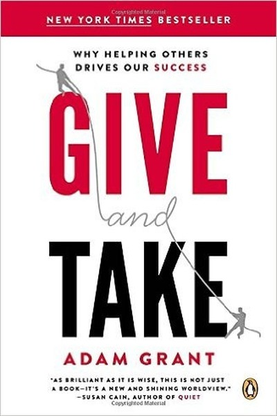
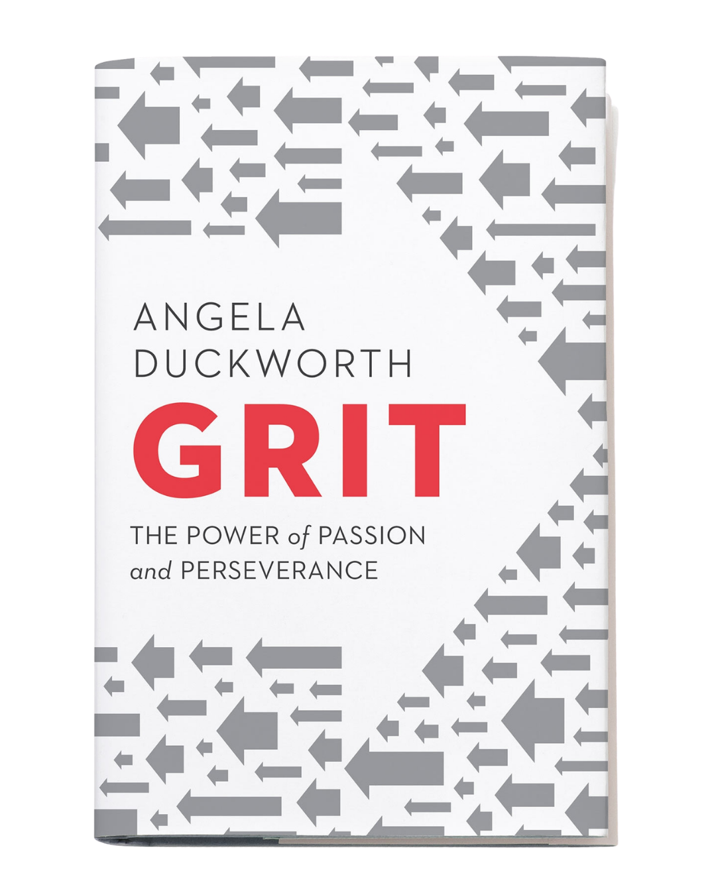
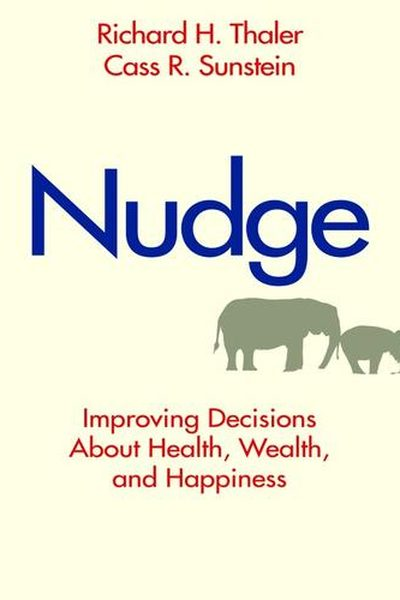
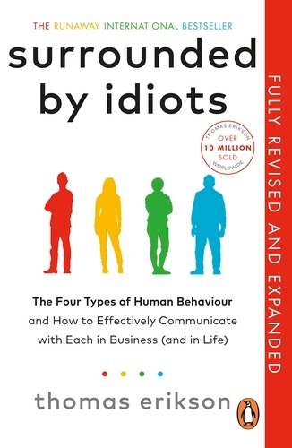
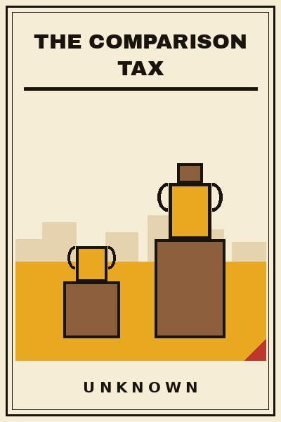
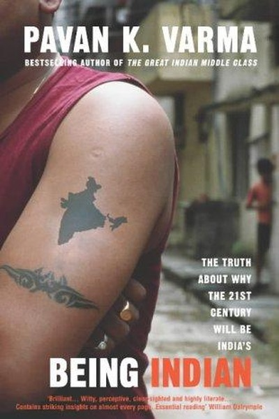
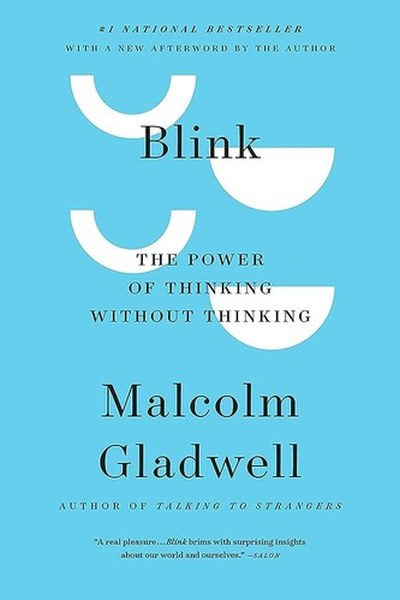
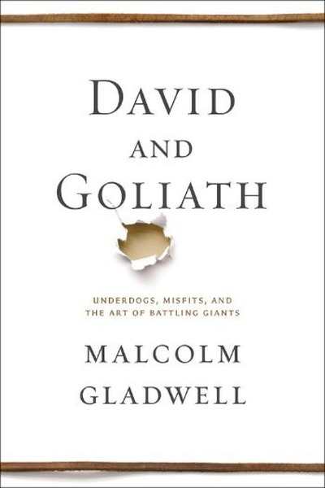
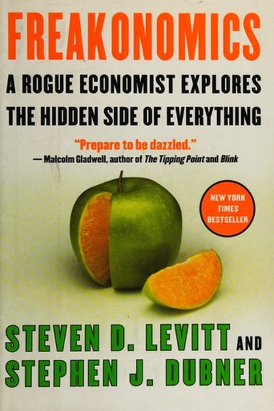

Library › Books like Outliers
10 Books Like Outliers That Hit the Same Nerve
You finished Outliers by Malcolm Gladwell and want the same energy: No one makes it alone. Success = talent + 10,000 hours + hidden opportunity + cultural legacy + being born at … Here are 10 more that scratch the same itch, each with a free chapter-by-chapter breakdown, key lessons and action steps on this shelf.

Give and Take The most successful people are givers - generous with help, knowledge and credit - who protect themselves from being exploited. READ THE FREE BREAKDOWN →
Grit Talent × effort = skill. Skill × effort = achievement. Effort counts twice - and grit, not genius, predicts who finishes. READ THE FREE BREAKDOWN →
Nudge: Improving Decisions About Health, Wealth, and Happiness You can't stop being human - but you can design your environment so being human leads you the right way. READ THE FREE BREAKDOWN →
Surrounded by Idiots People aren't idiots - they're just a different color. Learn Red, Yellow, Green, and Blue, and communication finally makes sense. READ THE FREE BREAKDOWN →
The Comparison Tax Comparison feels like information. It is actually a tax: on focus, on joy, and on the decade you were given to build your own thing. READ THE FREE BREAKDOWN →
Being Indian Indians juggle paradoxes - family duty and personal ambition, deep faith and hard pragmatism - and that juggling is the national skill. READ THE FREE BREAKDOWN →
Blink Gladwell's exploration of thin-slicing: the instant judgments your unconscious makes in two seconds are often brilliant - and sometimes dangerously wrong. READ THE FREE BREAKDOWN →
David and Goliath Giants are not what they seem - their strengths have hidden weaknesses, and underdogs win by refusing to fight by the giant's rules. READ THE FREE BREAKDOWN →
Freakonomics The world is driven by incentives more than morality - and asking the wrong questions hides the real answers. READ THE FREE BREAKDOWN →Every summary is free: lessons, examples, action steps, audio in your language.